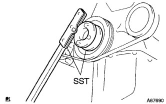
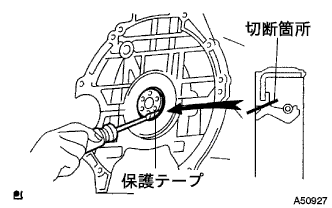

Engine rear oil seal removal |
| 1. Automatic Transx Axle ASSY removal |
reference)| 2. Drive plate & ring gear SUB-ASSY |
|  |
Use the SST to fix the crankshaft damper and remove 6 drive plates & ring gear mounting bolts.
Remove the drive plate & ring gear.
| 3. Remove the engine rear oil seal |
|  |
Use a cutter knife to cut the lip of the oil seal.
Use a flathead screwdriver with a protective tape to remove the oil seal.